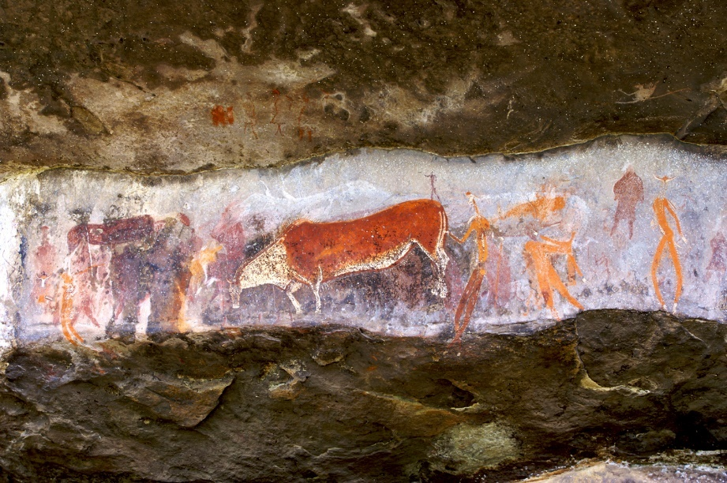
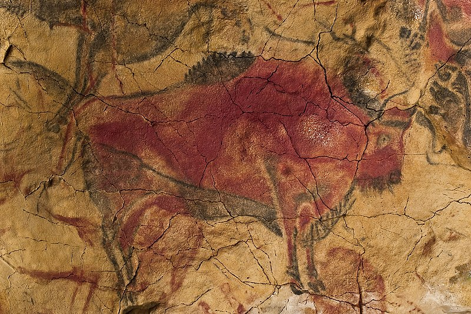
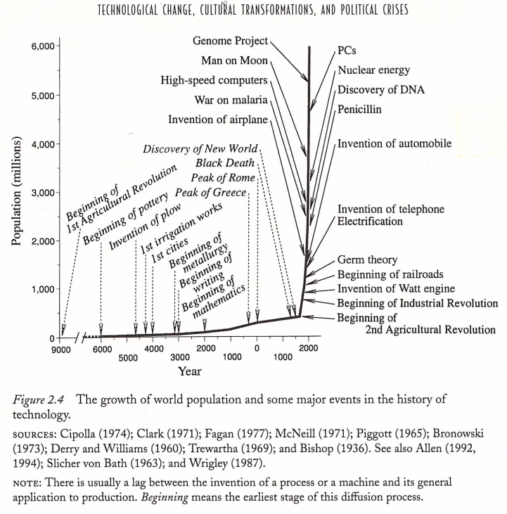

G-2.0 – “Settling…Cultivating…” – The Neolithic (10,000 BCE to 32 CE)
G-2.0 (c. 15-10,000 BCE – 32 CE):
“Settling,” Neolithic’s 1st Ag-Revolution, Excess Production
Governance & Commerce, Specializing Labor, Slavery, Writing & Finance
Climate Heating (+/-) Cooling – G2.0’s Climate Risk – Famine
Prosperity v. Peril : Beginning of Cities, Human Complexity and population “Scale”
“The dog was the first domesticate. Without dogs you don’t have any domestication. You don’t have civilization.”[1] Greger Larson
Trekking the Wild Neolithic: Bearings, Cairns, the Samí
Though homo sapiens appear in the fossil record 250,000 years BCE, historians of civilization contend that the “civilized” human world does not emerge until somewhere between 12,000-5,000 BCE with the appearance of agriculture, urban centers, and writing. The eminent historian, David Wooten, recently summed it up like this
“The world we live in is much younger than you might expect. There have been tool-making ‘humans’ on Earth…for around 2 million years. Our species, Homo sapiens, appeared 200,000 years ago, and pottery dates back to around 25,000 years ago. But the most important transformation in human history before the invention of science, the Neolithic Revolution, took place comparatively recently, between 12,000 and 7,000 years ago. It was then that animals were domesticated, agriculture began, and stone tools began to be replaced by metal ones. There have been roughly 600 generations since human beings first ceased to be hunter-gatherers. The first sailing vessel dates back to 7,000 years or so ago, and so does the origin of writing…what we may term historical humankind (humans who have left written records behind them), as opposed to archaeological humankind (humans who have left only artifacts behind them), has existed only for about that length of time, some 300 generations… This is the true length of human history; before that there were two million years of prehistory.” David Wootton, The Invention of Science: A New History of the Scientific Revolution, New York, HarperCollins, 2015, 3-4
Fair enough, if, what we’re tracking is “science,” writing, advanced watercraft, agriculture, or the domestication of species.
If, from another track, we are bushwacking the total spectrum or foundation of human “complexity,” that is, the development of all the tools and techniques and clever strategies that made each successive level of homo sapien’s path to here possible, in a word, if we are looking for the cairns of our total cumulative survival story, and, as WG posits, the layer-on-layer, trial-error, success-failure, advance of these hyper-natural skill sets and cumulative knowledge that had to precede, and that Wootton tacitly must presume for “science” to come into existence, at all, then so-called “big” history trackers are on to another level of critical thinking about what it means to “be,” or really, to “have achieved and become…and now even forgotten a lot of…what it means to be 21st Century “human.” And, like Newton, we acknowledge, we’re listening, trying to imagine, and indeed, acknowledging our deep ancestors “on whose backs we stand.” Or, to remind, better captured in Beth Shapiro’s words:
“The rules of evolution are simple. Mutations accumulate. Most of the time it is a simple game of chance that decides whether those mutations are passed to the next generation.…For most of our own evolutionary history, our lineage was no different from any other. Our ancestors were among those in their populations that survived and reproduced. Over billions of generations, our ancestors’ genomes accumulated mutations and our lineage adapted. Climates changed, habitats shifted, niches emerged and disappeared. Our lineage became animals, then mammals, then primates, then apes. And then our ancestors figured out how to break the rules. They learned to work together to overrule chance, to help others rather than allow those less fit among them to die. They learned to fashion their surroundings rather than be changed by them. They learned to direct evolution—to determine both their own evolutionary trajectories and those of the species with which they interacted…while paleoanthropologists still don’t fully understand where or when or how this happened, this is how we became different, unquestionably, from every other species that lives or has ever lived on Earth. This is what it means to be human.”
Beth Shapiro, Life as We Made It – How 50,000 Years of Human Innovation Refined – and Redefined – Nature, New York: Basic Books, 2021, 52-53; my emphasis)
If we’re talking “civilization” or “globalization,” then Wooten’s, or Richard Baldwin’s Great Convergence, or Fogel’s “techno-physio evolution,” approaches capture most of the recent modern story.
Bearings
If, from our longer-toothed view, however, we are tracking wild globalization, then we bear down hard on Shapiro’s compass. And while we are at it, let’s add three new bearings to our trekking compass:
First (unknowability), we don’t and can’t know a lot of the paleo-record – we’re not flying completely blind, but we are grappling in and into the darkness.
Second (“primal v. primitive”), the folks that trekked into the Neolithic (G2.0) were probably far more advanced than we (or Wootton’s, or Baldwin’s, or Fogel’s) compasses are able to measure or perhaps to even imagine – in their fully human brains and souls they bore the cumulative knowledge that had carried all of their predecessors (and eventually, us) to their “here.” They were not “primitive” but rather, in wild globalization terms, they were “primal” – they were, as we are today, “hyper”-natural.
Third (“scale”), the most important bearing for our wild compass is “scale” – like the dinosaurs, once humans figured out this “hyper-innovation” thing, human population growth turns to domination and explodes, from as few as 10-30,000 possible cohorts in the depths of glaciation and volcanic winters to the nearly 8 billion souls roaming the planet today. “Natural” evolution (mutation, natural selection) can take hundreds or thousands of years, or more; the wild global human version can happen with hyper-natural swiftness, in just a few generations, or even one – think of the socio-cultural and evolutionary effect of iPhones or the Internet of Things (“IOT”) on our children or our access to knowledge and information.

Compass Bearing #1 – Unknowability: Any deep paleo-history derives from the likes of random and scattered bone fragments, scratch DNA in pottery residues, stone tools, etc. We just don’t know, and likely may never know, a lot of it. The record may be growing, but it’s still limited, gaping and gapping with blind spots, and it’s spoken from the highly inquisitive and informed yet nonetheless, the imaginations, of smart trekkers like Shapiro…or here David Graeber and David Wengrow…:
“Most of human history is irreparably lost to us. Our species, Homo sapiens, has existed for at least 200,000 years, but for most of that time we have next to no idea what was happening. In northern Spain, for instance, at the cave of Altamira, paintings and engravings were created over a period of at least 10,000 years, between around 25,000 and 15,000 BC. Presumably, a lot of dramatic events occurred during this period. We have no way of knowing what most of them were.”
(Reference: David Graeber, David, and Wengrow, David, The Dawn of Everything – A New History of Humanity, New York: Farrar, Straus, Giroux, 2021, p. 118)

Compass Bearing #2 – Primal over Primitive: Wild Globalization’s tracks Graeber and Wengrow – these very early homo sapien folks lived and died, scrapped and thrived, under conditions impossible for “moderns” to imagine today, and without all of our accumulated knowledge, some of which comes from them. Cognitively, their brains were as large and full of ideas, and they were inspired by the human imagination. They were our brothers and sisters. They were less “primitive” than “primal.” From a WG view, their jagged, skin-of-their-teeth survival was one of the most historic, the most against-the-odds, feat our species has pulled off – without which we, or Hubble or Webb or Apollo on the Moon, iPhones, Wootton’s science, would not have come about. They knew, daily, what most of us today have forgotten or suppressed: “Extinction is a real possibility.” Their primal instincts, intuitions, their trials and errors, their endurance, carried our species out of darkness and through 250,000 years of ice ages and volcanic winters. They were fully human, with the same if still emerging intelligence and the same propensities for good and evil, for horror and beauty, as us. As clever and advanced as we moderns are, if we met them on the open savannahs or deep forests of their world and with only their resources they would be our teachers – if they didn’t kick our butts around first. Again, tracking Graeber and Wengrow:
“Let us bid farewell to the ‘childhood of Man’ and acknowledge (as Lévi-Strauss insisted) that our early ancestors were not just our cognitive equals, but our intellectual peers too…they grappled with the paradoxes of social order and creativity just as much as we do; and understood them – at least the most reflexive among them – just as much, which also means just as little. They were perhaps more aware of some things and less aware of others. They were neither ignorant savages nor wise sons and daughters of nature. They were, as Helena Valero said of the Yanomami, just people, like us; equally perceptive, equally confused.”
(Reference: David Graeber and David Wengrow, The Dawn of Everything – A New History of Humanity, New York: Farrar, Straus, Giroux, 2021, p. 118)
Our wild challenge is to try to imagine how we are possible today in part because of what they achieved in surviving the human trek out of the original wildernesses. They took the first steps on the incessant march towards greater levels of hyper-human evolutionary development and complexity.
Yet in a deep irony of human existence, we must also realize, in that same imagination, that much of the knowledge and innovation gains they achieved and which began to define our hyper-nature have either been forgotten or has slipped into and has been stealthily assimilated into our own subconscious. Like Neanderthal DNA which lives in us today. Their essence, their secrets, their mysteries, remain part of us, yet their deep history portend what Carl Jung called the human psyche’s “Collective Unconscious,” or what “big” historians call the full content of our “cumulative human learning.” Genius is sometimes described as “…she’s forgotten more than we’ll ever know.”
What might we gain by imaging them as our “peers” or distant cousins?
Well, by the opening of the G2.0 Neolithic, humans may not have yet achieved formal “science,” but we were very long on the tooth in having developed the most vital component of science itself, that is, “objective thought.” Humans intuitively considered their cosmos as something “other” than themselves, as an “objective” universe. Flowing upstream from Wootton’s view, we apparently did this less (if at all) through abstract writing but rather through art and especially cave art and, as we will study soon, through mythic and orally transmitted cosmic stories that later grow into faith traditions, so in modern-speak, “religion.” And curiously, as these early peoples grew objective thought through oral traditions, story, myth, they began to “model” their world, to animate the great natural forces that both supported and threatened them – this same hyper-natural intellect would also, we contend here, become Wootton’s “science.”
Artifacts of writing appear globally and reach back to Mesopotamian, Egyptian, and Elamite cultures (4th millennium BCE), to China (2nd millennium BCE), and to Mesoamerica (4th millennium BCE).* [*Source: https://en.wikipedia.org/wiki/Writing#Origins] So roughly 2-3-4,000 years ago.
However, by the time writing appears in the record, cave paintings and other artforms had been part of the human soul’s “record” for at least 30,000 years. Probably much longer.
Peruse this cave painting from the San People who lived and thrived on South Africa’s Great Escarpment, and who created one of the greatest arrays of cave art in the world.

(Rock Art by the San People at Giants Castle in Drakensberg, South Africa; iStock-153956137.jpg)
Appreciate here the colors, the possible drama, even the abstract nature of the human and ungulate images. If the Louvre and Met are modernity’s great monuments to beauty, how then do we regard the five-hundred natural cave cathedrals of the San and the 35-40,000 works of some of the most extraordinary, consummate images in human history, and that may reach back 40,000 years BCE, or more*. (*Note: The materials used for their colors and images are difficult to date.)
Cave painting has been a global human pursuit for perhaps most of Beth Shapiro’s 50,000 years of “hyper-human” development. Cave painting is found ubiquitously around the globe and may also include our Neanderthal cousins: the Maltravieso cave in Cáceres, Spain dates to possibly 64,000 years BCE, before Homo sapien showed up in the record. The Chauvet Cave in France dates back 30,000 BCE; Coliboaia Cave, Romania, to 32,000 BCE; the Nawarla Gabanmang site in Australia, 28,000 BCE; primitive images of humans hunting pigs in the Maros-Pangkep karst of South Sulawesi, Indonesia, date back 43,000 BCE. Observe Spain’s Cave of Altamira:

(Source: Museo Nacional & Centro de Investigación de Altamira; Approved for publication, Wikipedia Foundation.)
Picasso, or Monet, or Chagall, would all have been elated to have spelunked deep into these ancient caverns, and to have sat with these primal artists.
We’re curious if cave art might call into question Wootton’s distinction between “archaeological” and “historical” humankind?
Minimally, why must formal “writing” take precedence over “image” or works of the imagination? What do we gain by distinguishing the written word as initiating formal “history?” Or giving precedence over the spoken word and the great oral traditions such as Homer’s Iliad & Odyssey which appears around 800 BCE, while the epic Vedic Mahabharata appears in written form centuries later, between the 3rd century BCE and the 3rd century CE?
Finally, it’s a curious footnote that early writing systems appear not to have been about beauty or imagination – they appear more focused on accounting practices and societal order. Sumerian Cuneiform (circa 4th millennium BCE) were used for keeping account of contracts and agricultural records, and as Graeber astutely observes, “debt” or “credit systems.”* [*Source: David Graeber, Debt, the First 5,000 Years, Brooklyn: Melville House, 2011, p. 21-40.]
Contrasted to Graeber and Wengrow, it’s perhaps not an accident that Wootton’s distinction about “history,” that “historical humankind” “begins” with written records and mathematical accounting methods, focuses on the inception of “modern” humankind. Perhaps the whole thrust of a “wild globalization” theory is to attempt to re-capture what the so-called “civilized” view gains, but also may obscure, in the distinction. We will explore whether something like Wootton’s partition between “archaeological” and “historical” humankind does not outline, buty also mask, the secrets of how and why the “wildness” of civilization haunts the modern order today?

Compass Bearing #3 – “Scale”: From G2.0 forward, Wild Globalization theory proposes another compass bearing, that is, that the predominant theme of this human trek out of the wilderness is in fact the steady, indominable, yet subtle and stealthy march of “complexity,” on the one hand, (e.g., from crude stone tools to highly crafted obsidian tools, arrows, atlatl-powered spears, to the combination bow, to gunpowder, the atomic bomb, etc.); or, on the other hand, the uneven, then gradual, and then exponential growth of human population numbers from @250,000 BCE to the present.
“Scale” is also evident in one of the most dynamic and pervasive trends in modern globalization, and that is urbanization, or initially the move from smaller hunter-gather groups toward larger and more settled urban centers. In our 21st century urban scale point to one million or more souls per week moving into cities across the globe.* [Sources: Both Geoffrey West, Scale, 2017, and Robert Neuwirth, Shadow Cities, 2006, and Stealth of Nations, 2011, are keen observers of this this trend.]
“Scale,” then, studies how systems and networks grow or shrink (“quantity”) as well as how things and systems become more complex (“quality”).
G2.0’s 1st Agricultural Revolution may have opened around 9-10-12,000 BCE with an estimated 1-15 million human cohorts on the planet. But the trek to early agriculture had not been a smooth ride – it’s likely that global human population may have declined to as few as 10-30,000 around 74,000 BCE following the super volcano eruption in Lake Toba, Sumatra, Indonesia. [Note: Scientists have competing theories about whether this possible demographic “bottleneck” was triggered by the Toba event; Toba does appear to correlate to the beginning of migration away from Africa.]
Human population “scale” is observable in Fogel’s conception of “techno-physio-evolution” in which human numbers grow steadily following the 1st Agricultural Revolution (@9-12,000 BCE) but then explode as the Scientific Revolution’s emerging technologies and accumulating knowledge emerge in the 16th-17th centuries. Fogel’s vertical graph tracks population numbers (scale as “quantity”), and the horizontal graph tracks the advance of human innovation and science (scale as “quality”, but also “complexity”):

So it takes @200,000 years for human population to reach 1 billion souls by about 1804 CE, and it takes only another @125 years to reach @2 billion in 1927, and then just another 100 years for human population to grow to the nearly 8 billion humans on the planet today in the 2020s. (Source: https://en.wikipedia.org/wiki/World_population#History )
In the 21st century, we stress over the deepening physical (e.g., supply chains) but also the psychological and sociological “angst” (e.g., the explosion of psycho-tropic pharma) brought on by the realities and risks of modern “complexity.” In Fogel’s longer tooth view, perhaps we can appreciate how the evolution of complexity speaks to the very essence of the hyper-natural human trek out of the original wilderness and into the new wildernesses of hyper-complexity.
In WG Part II we will be thinking a lot about “scale,” inspired in part by Geoffrey West’s 2017 research. West observes that:
“One of the major challenges of the twenty-first century…is…whether human-engineered social systems, from economies to cities, which have only existed for the past five thousand years or so, can continue to coexist with the “natural” biological world from which they emerged and which has been around for several billion years. …Existing strategies have failed to come to terms with an essential feature of the long-term sustainability challenge embodied in the paradigm of complex adaptive systems; namely, the pervasive interconnectedness and interdependency of energy, resources, and environmental, ecological, economic, social, and political systems.”
(Source: Geoffrey West, SCALE, the Universal Laws of Life, Growth, and Death in Organisms, Cities, and Companies, New York: Penguin Books, 2017, p. 411-412, Kindle 6863-6880)
West is tracking Fogel’s scale correlation between population growth (“quantity”) and complexity (“quality”), and then wondering how 21st century resources can adjust to this black box of “…interconnected…interdependent resources, energy, economy…and social-political orders.” A “wild” formula, to be sure.
Cairn-Logic: Human-Change “Radicals”
Humans impose new and different pressures on evolution. We are both the beneficiaries and the authors of what might be called “change radicals” of the very forces that enabled us to move out of the jungles and savannahs and into the by now even wilder 21st century.
This new, innovation-evolution changed the order of the pre-human schema. Recall our atlatl-spear-throwing friend – overnight, or at least as soon he could learn it’s tricky technique – the atlatl-thrower became more powerful…and deadly. It’s speculated that over-hunting contributed to the early Neolithic shift to animal husbandry – raising rather than hunting animal resources.

Innovation and invention changed the rules of the game. Our deep ancestors, equipped as they were with higher intelligence and communication, bipedal mobility and opposing-thumb dexterity, began to break, then change, even to make up, their own rules. New possibilities and synergies emerge. Teaming up with wild canines (@ 15,000 BCE) provided security and new hunting techniques. Husbanding wild species like sheep and goats (@13,000 BCE) provided more reliable supplies of meat and milk.
WG notices that human innovation-evolution either bends and adds to nature’s own change radicals or, in our new innovation-driven way, we morphed a new set of radical changes to nature. First order changes (suddenness, speed, scale, efficiency) appear as well as second orders changes (artifice, discontinuity, emergence, consequence).

First (1st-Order) Radical: Suddenness of Change. We know that the evolution of life can trigger sudden changes as it responds to, for example, ecological shocks. 60 million years ago the dinosaurs ruled. Until, apparently, the Chixculub asteroid, estimated at 10 kilometers (6.2 miles) in diameter at impact, hit Earth in North America’s Yucatan Peninsula region. Its impact released energy equivalent to 21-921 billion times the energy of the first nuclear bombs, and @100 million times the energy released by the largest ever human thermonuclear device, the Tsar Bomba bomb tested in 1961. The Chixculub impact is speculated to have caused catastrophic global climate disruption which triggered a “mass extinction” event – as much as 75% of plant and animal species became extinct. Including the dinos.
Suddenly.
Astrophysicists hunt asteroids today. Our blue planet, moving through the universal darkness, remains at sudden risk. Wild ecology.
Evolution theory tells us that “we” survived, that is, the mammalian DNA that somehow endured at the margins, traces of which still peeks through the deep paleo-record.
Likewise, 60 million years later, early human-like souls (perhaps Homo antecessor, Homo erectus, Homo habilis, Homo ergaster) mastered fire (circa one million BCE) and so changed the rules. Except that this time, their rule-change, as they scrapped and scraped through the Pleistocene’s thousands-of-year ice ages, was triggered by their human cleverness and perception.
Certainly not with the swiftness of a mass extinction, yet in nature’s pace of time and change an unforeseen transformation, nonetheless. They had discovered a way to take a very limited resource, that is, the magic of heat in the throes of ice, and then transform it into a virtually unlimited resource. Nature’s own creatures changed nature, itself. They borrowed natural fire and took it into their own hands, and caves, and so upped their odds of survival. No waiting around for DNA to emerge. “Natural” – but now intelligent – “selection.” And sudden.

Second (1st Order) Radical: Speed of Change. OK, it might seem like the same thing, but “speed of change” is actually a consequence of suddenness. Think of speed as the intended-unintended shadow of suddenness – if you are the atlatl inventor-thrower 30,000 years ago you can shock and conquer the savannah or the forest. Change is now quick and deadly. And, in its radical form, it’s all powerful. The thrower rules. The target is dead meat.
So: positive consequence – more successful hunting, more meat; negative consequence – a new risk of over-hunting, and not just the ungulate herds but now other human competitors. “Intraspecific” aggression was weaponized. Wild demographics.
Speed haunts modernity today, especially today. The American’s 1945 atomic bomb was a “sudden” emergence and emergency which speedily changed the trajectory of human global politics. We are still floundering around, decades later, trying to get a grip on how to live with the power of the atom. Our clever technology advances ahead of the human practical and ethical response.
Speed shows how human-innovation evolution is always “ahead of itself” – everything else in the natural world can’t keep up – the dinosaurs took millions of years to present the T-rex or the velociraptor. The atlatl? The atom? Not so much.
Wild tech’s clever devices are quick and their consequence open-ended, unpredictable. Observe how the mobile phone has transformed culture in less than a generation – the lexicon of human knowledge is at one’s fingertips, but modern social life and interaction have been radically and speedily altered – we sit down to dinner and read our cell phones rather than talking with one another. Our kids can track YouTubes and Tweets but read books – not so much.

Third (1st-Order) Radical: Scale of Change. See above under “Bearings,” but we mention it again here as a fundamental radical of human evolution.
It’s BIG. Suddenness and speed of change meant the newly equipped player could “go big” and so dominate his or her environs and peers. One atlatl thrower is one thing, fifty raining down on the herd or neighboring tribe is another.
The human paleo record is replete with traces of our distant and now disappeared cousins who were either vanquished in the fight or absorbed into the conquerors (our) DNA in fireside liaisons.
Homo sapien showed up around 250,000 years (1,000 generations ago) after surviving and eliminating every other Homo species. In that stretch we have grown (“scaled”) to nearly 8 billion and now dominate essentially any corner of the globe we care to.
Human innovation evolution has catapulted natural evolution on an exponentially scaling trajectory.

Fourth (1st-Order) Radical: “Efficiency” of Change. OK, so change is always at “play” – at risk. Today’s order may be “set” but it can change. Quickly. Drastically. Miraculously. Disastrously. Again, ask the dinos. Or the Romans.
It is estimated that 99.9 per cent of all biological mutations end up going nowhere.[2] So on the one hand we might observe that change is wasteful. Maybe.
But we can invert that insight as well – what if we just say that change is constantly, incessantly, trying to change. Everything, every current order or possibility of the moment, is always on the table, vulnerable to change, some players, like the dinos, dominate but others lurk underneath, in the crevices, outlier alternatives, ready to emerge as conditions evolve. Everything is always at risk. Tested every moment.
So other possibilities are always out there. Available. Latent. Waiting. IBM in the 1980’s was the dominant I-Tyrannosaurid, until a group of scruffy, burrowing mammalian hippies got a contract to buildout the “minor” software components of IBM’s new personal computer products – then the giant almost imploded and the hippies became Microsoft, the new biggest player on the global block.[3]
The inventor of the atlatl may not have been the biggest, strongest spear-thrower in the clan. This holistic evolutionary process works because there’s always a lot of alternatives ready to go, ready to fill in, a kind of backup squad of possibility.
The present order is always being tested. It’s at risk. What works now may not work later. Mammals appear roughly 300 million years ago, and the Jurassic mammals that burrowed and scurried under the dinosaurs were likely small, weird creatures (certainly from the dinos’ view). Until they weren’t. Until their way worked.
So we can also think of the 99.9% as a measure of efficiency, as a hint at nature’s spectrum of possibility, the multiple alternatives that are always trying to emerge. From this view, the 99.9% is a factor of potential, of possibility, maybe burrowed underground, what we might call “hanging around” outliers.
Thomas Edison made 10,000 failed attempts before he came up with the successful incandescent lightbulb. Michael Jordan claims he missed 9,000 shots, lost nearly 300 games, was trusted to and failed 26 times to make the winning shot. Failure? Or the incessant condition of, the test of, success?
Evolution works because it’s always about the test of success and the risk of failure. It’s therefore highly efficient. Even when, or maybe especially when, it fails.
Fifth (2nd-Order) Radical: “Artifice” of Change. Change itself changes. Nature gave humans rules – “…this is what you can and cannot do, OK?” Then we changed the rules. And we changed how change itself would work.
So the first radicals – suddenness, speed, scale, efficiency – we can think of these as “quantitative” – they show the magnitude or amount of how a phenomenon or creature adapts to challenges or threats or opportunities. Suddenness-speed-scale-efficiency are 1st-order, “quant” radicals.
The next radicals, “artifice,” “discontinuity,” “emergence,” and “consequence” – fancier terms but we’ll cook them down – are more subtle and illusive, and so more challenging to WG’s cairn-logic. They are fully human. Radically differentiating. Even…wilder.
For artifice, look again at the atlatl. What is it? Relative to, say, the human arm? First of all, it’s just a stick. Sure it’s been whittled and shaped, but it’s still…just a stick. Isn’t it? Or not? OK, it’s now, possibly, something different. It’s a tool. But the atlatl-stick is really silly, really meaningless, itself, without the spear. Or the arm.
So, well, isn’t the stick now an “extension,” a kind of prosthesis – it’s not real, really, it’s artificial, but, wait a minute (!), it is real when the arm and hand take hold of it and it holds the deadly spear. Voilà! The stick arm is now a hyper-arm…! The small-armed under-achiever is now the “chief!” A new player is in charge now. “Things are different! I’m the boss. Get in line! You, over there, start making a lot of these thrower-stick[4] things!”
The atlatl changes the human arm – but the arm itself has not changed. It’s still “natural.” Or is it? OK, alone, it is the “same.” Taking hold of the atlatl, and its spear, the human arm now commands a radically new, artificial, strength. The “it” – both the arm and the stick – are just not the same anymore. The “it” has changed, differentiated. It is entirely new. Sure the arm itself is identical – naked, unleveraged. It’s this piece of wood, with a handle, that’s new, that’s a new thing. Entirely. “Qualitatively” if we’re looking for a bigger word.
Without the imagination to conceive it, the hand to hold it, the perception to focus and aim it, it’s just a fancy stick.
Together – in synergy – the original, “natural” arm plus the new, invented, “artificial” atlatl-stick-arm, well, we have a whole new ball-game. Not merely a “radical” of change, but, in fact, a spontaneous 2nd order of change. What will come to be called a “paradigm shift.”
“We” take it entirely for granted in this 21st century – artifice is now an essential, perhaps the most essential, human characteristic. It’s our nature, or, rather, our hyper-nature. Artifice, the virtual, has become our singularly human way of encountering the world itself. Sure, we still go hiking on a beautiful mountain trail, but how many of us now carry our GPS empowered iPhones?
This subtle, thousands-of-years transformation of the human experience – really of what it means to be human – occurred before G2.0. Virtualization marks the bridge from human nature to human hyper-nature. We owe its evolutionary emergence to these scrappy and clever and resourceful ancestors acting under the power of their big-brain imaginations and no doubt often in desperate straits. WG postulates that much, it not all, of our 21st century “human nature” got legs and arms, indeed, “atlatled”-arms, from these earliest of dreadnaught humans and proto-humans.
But back to the “nature” question, if we must. What’s “natural” or “un”-natural here? And what, if anything, does our WG thinking gain by making a difference? OK, right, the whole game is different. We have the atlatl, for heaven’s sake (!), and lots more meat, and now everyone in the neighborhood is running. Away. Quickly. Maybe we rule the grassy or the forested roost. For now. Until…the next big-small thing comes along…
The reader can wrestle with their own take on the “natural” question. We’ve already kicked it around a bit. In WG’s take, though, the question just doesn’t track out in a serious way. It’s just not a helpful distinction.
Why’s that? Well, because without the atlatl, the grassland or the forest is still wild. It’s rough and, to use a highly technical, big anthropological term, it’s “bad-ass!” But with the atlatl, (or the atom bomb…) the grassland or the forest or the steel and concrete jungles are, actually, even wilder. [Hint: This is the essence of WG’s “wild” – WG is trying to tell us that the “natural” was always wild and “we” have just made it wilder. But we’ve forgotten, we’ve tricked ourselves, as to just how wild the original wild was, or, more seriously, how much wilder we have made it. In fact, you can stop reading now. Put the book down. Maybe get a beer. That’s the whole point here.]
Sixth (2nd Order) Radical: “Discontinuity-Liminality” (the “@”) of Change. The trace evidence of WG’s walk through the cairns is just not a “Point A to Point B” “thing”…or “think.” It’s not a linear track. In all these change-radicals, innovation-evolution happens unevenly, even asymmetrically or discontinuously – more quickly here, on this continent, and seemingly pacing more slowly on another. Discontinuity between continents, between various cultures, even between individual human players, is a dominant observable of globalization.
But think of how evolutionary reality itself is really layered, with different strategies working at the same time. In one epoch, one major leaguer dominates, while the minors are waiting. The dinos were way bigger, way more powerful, totally dominant, than us wimpy mammals. For hundreds of millions of years. Until…they weren’t! Major and minor leagues moved along unevenly, but simultaneously.
For example, the bridge from the Pleistocene[5] to the Neolithic, literally, “pleistos” for “most” and “cene” for “recent,” is a formal term – the period is also referred to as the “Ice Age.” The Pleistocene stretches from @2.5 million to @15-12,000 years ago. So it’s a big term and a big time. There’s a lot of “point A’s” and “point B’s” along the way. Hence the cairn mark “@” – for “about…” or “approximate…” or really “we’re guessing here…” Even the @15-12,000 number is not really boiled down – some estimate 15 and others 12, still others 9 or 7, etc. – we’ll try to cook it down a bit soon.
When G2.0’s Neolithic (“neo” for “new” and “lith” for “stone,” so new stone age) gets moving around 10-15,000 years ago, the Pleistocene is still hanging around. The shift is uneven, over scores of generations, and the change is “liminal” – like the light at sunset or sunrise – a kind of “between” time. One foot in the Pleistocene and one in the Neolithic – the Sámi on reindeer sleighs and the Sámi on snow-mobiles. There will be no singular linear inspired “event,” or if a point is suggested, such as Hammurabi’s Tables which may “mark” a possible inception of human writing or “civilization,” they are in WG’s schema really read as cairns on the trail.
Still, again, this is not the biologic clock of the dinosaurs. Liminal time and space hints at how transitions are often, if not usually, incremental. And discontinuous – tracking unevenly, at different paces from one corner to the next, accelerated for some and held back for others. Steps forward and back, sideways, at the same time.
Sure, “Pleistocene” and “Neolithic” are helpful terms or labels – thinking loves labels. Thinking likes, it even flows, on the waves of words and names. Thought is kind of like the atlatl – an artificial extension of nature thinking, itself. Thought is the meaning-thrower and words and names are its thought-spears. Thinking not only needs them, to think, on a practical level it is them. [Hint: “Pleistocene…Neolithic” fall under the human passion for labels. On the grandest “scale” we’re talking biology’s binomial nomenclature, so “kingdom, phylum, class, order, species.”[6]]
The liminal-discontinuity radical fits into a kind of time-shadow of how evolution emerges. It’s like the working holism that all the previous radicals give rise to. Liminal reminds us that, as gallant and ambitious, really as audacious, as our big-brain thinking aspires to be, it’s hard to get a hold of all the radicals in one sweep or in a single equation. And all these radicals are in play. At once. And they are happening to, shaping, affecting, one another. All the time and in every moment. This creates a kind of hyper-variability. Of change. Change is changing and changeable. Because of change, the real defies total observation or accounting. A black box. Emerging orders. Wild.

Seventh (2nd Order) Radical: “Emergence” of Change. We have already come across the terms “emergence” and “emergency.” Let’s cook them down a bit.
Recall our friend Michael Berry’s pool table story – predicting billiard-ball collision trajectories? Well, emergence is kind like that.
What emergence says is that the natural order, where we live-survive-thrive (or not!), the Wild, is read by very perceptive folks as presenting different “levels” of order. “The forest,” so the old folk yarn goes, “is more than just a collection of trees.”
So think fire – if we light a tree on fire, it burns. But if a forest is set ablaze, watch out! A crowning, climax forest fire is a whole new ball-game that can create its own winds, even tornadic winds, and so its own weather, including lightening – it actually gives rise to a new localized meteorological order of behavior. These new fire-behaviors are not entirely predictable in the single tree burning alone.
In chemistry, emergence may be seen to appear as “phase transitions” where, for example, when a liquid is heated it changes to gas with new behaviors and properties (e.g., volume) that were not present in the previous state.
Likewise the atlatl – it would have presented a new human order – no longer did the hunter have to get as close to the prey, or be hunted as the prey by the tiger or lion or the great wild bear. Or neighbor. The atlatl, a simple tool, would have changed not only the hunting order but in fact the entire social order as the atlatl-armed tribe emerged superior to its peers.
The science of ecology, among others, is teaching us about the ways new orders “emerge.” Ecology appears as far back as Aristotle, or likely many thought-throwers before. As a formal science, it appears in the mid-20th century with early observers like J.K. Fiebleman (1954) and the American brothers Eugene and Howard Odum. Eugene boils it down here in a 1974 article: “An important consequence of hierarchal organization is that as components, or subsets, are combined to produce larger functional wholes, new properties emerge that were not present or not evident at the next level below. Fiebleman has theorized that at least one new property emerges with each new integrative level of organization. Whatever the emergent rate, we can conclude that results at any one level aid the study of the next level in a set but never completely explain the phenomena occurring at that higher level, which itself must be studied to complete the picture. The old folk wisdom about “the forest being more than just a collection of trees” is indeed the first working principle for ecology.”[7]
When we say that there was nothing in the human story that predicted the atlatl until it flew the spear onto the scene of the hunt, we are observing how the evolutionary principle of “orders” give rise to, like the water boiling, new, different, unforeseen and in fact unpredictable orders. And that emergent order changes and affects both every previous order down the line, and it effects a new set of possible consequences for the future.
The big change coming up in the Neolithic will be agriculture. The atlatl, a stick of wood, may have aided in the appearance of agriculture. Here’s how.
The atlatl increased human hunting prowess and efficiency. More kills led to more meat led to more food for the tribe led to more parties by the fire led to more tribe member kids and population led to the need for more meat led to possible scarcity of game and – voilà – someone thought, “…why don’t we just catch the wild goat or pig…” – and the rest of the story may account in part for the beginning, the emergence of, husbandry. Raising, cultivating critters then allowed folks to settle a bit, to not have to follow the herd but rather to tend to the herd. Husbandry may have been an early precursor of agriculture itself.
Emergence sustains its own totalizing and wild radicality. It is the total stage-act of all of these evolution radicals. Emergence is the end-brew of all the other radicals cooked into a singular sauce. Emergence defies any final registration or end-name because, in spite of its continuously advancing complexity and development, or rather as a result of it, emergence remains hyper-variable and so indefinitely complex.
Emergence undermines and ruins any attempt to fully define or quantify itself. With its suddenness and speed when set in motion, its enlarging scale, its apparent and hidden efficiencies, the artifice of its expression and applications, the constant disruption and asymmetries of its liminal and discontinuous possibilities, emergence not only leverages the real – it is the real. Wild.

Eighth (2nd Order) Radical: “Consequence” of Change. So we innovate something. Sometimes intentionally, sometimes by accident. Even randomly. Copernicus’s planetary motion discoveries “were obvious to him and to others in his day [but] he had been dead seventy-five years before the authorities started to get offended. The president of the Linnean Society, which first published Charles Darwin’s The Origin of Species in 1859¸ commented that there were “no striking discoveries” in that year’s publications. Penzia’s and Wilson’s discovery of “cosmic background radiation,” the early empirical evidence of the Big Bang, came about because they were cleaning bird poop off their radar arrays. And Alexander Fleming’s accidental discovery of the penicillium mold sat on the shelf and was not converted into usable medicine for years. [8]
So not only are we challenged to know or predict the future, but we can’t know or fully predict the consequences of our own innovations and inventions. Human evolution is an “open” order of change – under the always emergent and spontaneous and unruly change orders above. It’s wild. Human evolution lives in nature’s own Pandora’s box of clever ideas and devices (the iPhone, the atom bomb) that might birth through us but once on the ground move ahead of our abilities to fully control. We, and the world around us, become the intended and unintended consequences of their energy and force. We are nature’s hyper-natural experiment.
A Sleighride with the Sámi
While living in far-northern Tromsö, Norway, in 1970-71, Ottar Skagen, my Norwegian host, and I were invited on a “ski tur” outing into the Finmark interior with some twenty or so other adventurous Norwegian “city” folk. For two days we cross-country skied up a magnificent frozen river, ending up on top of Finmark’s “Vida” (“Plateau”). We had slipped into a new world, into Sápmi, or “land of the Sámi.”
For on the second day, after a tricky ski up a jagged trail that took us out of the canyon, we were met on the Vida by teams of Sámi women with reindeer sleighs. We would then ride, each to our own sleigh and single reindeer, over the vida to their hometown, Kautokeino. For a 18-year old American kid – an experience of a lifetime…!
The ebullient Sámi women, their smiles beaming, exuded a natural elegance, an irresistible grace and beauty, in this harsh Artic winter world – because it lies in the interior it does not receive the effect of the Gulfstream that warms the Norwegian coast and so Sápmi is the coldest region of northern Scandinavia. For our two-day sleigh ride they outfitted us with parkas and special moccasins (with the classic curled toes that serve as ski bindings), both made of reindeer fur – one of nature’s warmest furs due to air pockets in the hide.
Why Sámi women? We speculated, without conclusion. There was, however, no doubt in our urban hearts that, first of all, we were in their charge, and secondly, they were in charge. Period. With a smile.
After many kilometers we overnighted in thin-walled summer cabins at one of their out-camps. Temps that night dropped to well below zero. We rose in the morning to Sámi “coffee” – double strong and tinged with pure reindeer fat!
Our ears perked to the distant but familiar drone of internal combustion engines – some of their men-folk had ridden out on their snowmobiles to tend to the reindeer herd. We learned that overnight one of the reindeer had broken a leg in the deeply crusted snowpack. Away from our “turista” presence, it was to be slaughtered and carted back to town for butchering. An everyday in the Sámi reindeer life-cycle.
The Sámi name for the reindeer is boazu, and the Sámi’s co-existence with the boazu is called boazovazzi, meaning “reindeer walking.” Over thousands of years – and as WG will imagine it – both on the “fringes of” yet also “into” and “with” the Neolithic, or with an emerging “civilization” – the Sámi have walked over and about Sápmi with the boazu, whom they consider a kindred, life-giving and so sacred spirit.
As we rode in their sleighs, we came to see how the Sámi had one foot in the boazovazzi yet the other firmly in a two-cycle snowmobile 20th century – like many of the noble and proud, and wonderfully full-living indigenous peoples of the Arctic. Perhaps we can imagine that their cultures obliquely span the breech between the late G1.0 and early G2.0. G2.0 wants to claim that it slips into what we “moderns” think we can call – in our techno-cultural-econ brand – “civilization.”
But just what is this emergent phenomenon, “civilization” and how to imagine it?
The Neolithic
“…the psychology that evolved when our ancestors lived in small hunter-gatherer groups prepared us to cope with a world of personal cooperation and exchange in small communities. It did not prepare us to cope with a world of impersonal cooperation and exchange among millions of people (a typical advanced economy) or billions of people (the global economy).In a way, the complexity of the modern economy outran the ability of our stone-age minds to understand it…”
Marian Tupy & Gale Pooley
[Source: Marian Tupy, & Gale L. Pooley, Superabundance – The Story of Population Growth, Innovation, and Human Flourishing on an Infinitely Bountiful Planet, 2022, (pp. 513-514). Cato Institute. Kindle Edition.)
Looming and now faded into the shadows of this vast human history are the countless individual souls and clans who carried us to here. “We” are their culmination, their “after-thought.” We and they are one another’s “residuals” – we could not live in their world nor they in ours, and yet we are cousins.
The progression of increasingly complex spontaneous orders – e.g., to cities, modern energy tech, global supply chain inter-dependencies – would be foreign, perhaps even unimaginable to them. Yet their survival ways – advanced foraging and hunting techniques, crude tool and weapon making, their intuitive migratory patterns as they adapted to climate changes – would be foreign and impractical for us to craft from a dead start today. While it may appear that their ways have been forgotten or lost, from another perspective we can imagine that their techniques have been absorbed into our species’ “collective unconscious” memory, the deep archive of human evolution. And like the magnificent cave-art, or Natufian beer residues, present day deep explorers are uncovering the trace residuals of theirs and our past.
Our curiosity to grasp and re-imagine their ways will only fall short of their actual story. Even more likely it will obscure the “natural” grace and agony of their endurance to here, through and in us. It will over-, under-, and mis-state, it will mis-construe the violence and harshness, and beauty, which we, as their “modern” result, now pursue to new limits. Likely, we are not imagining them as much as we are attempting to regain a sense of our own perilous status as we move forward into the 21st century.
In this sense, WG fully acknowledges its own arrogance and hubris in the attempt. We ask for their patience as we stretch to prepare and save our own way by in part wondering how they managed their ages.
WG notes various modern navigators of history here – Baldwin, Fogel, Shapiro, McCloskey, Stark, Wootton – and many others, listening, quoting, watching for their insights and their blind-spots. Cairn-monuments mark the trail’s trajectory, but the bushwhacked tracks between are always incomplete, only sketched, projected, imagined.
WG, then, speaks as a kind of psychoanalysis of how we moderns perceive ourselves and our ancestors. It’s an attempt to re-vise and re-vision what might be termed “cultural theory,” or the ways we think about globalizing civilization, about “us.” “Cairn-Logic”…“Bearings”…“Change Radicals…” – these are heuristic strategies, lamplights rather than spotlights, so improvised torches in the darkness, as we grapple with our incessant curiosity to imagine, as Beth Shapiro notes, “what it means to be human.” Even though we are now assisted with the advanced techniques of science (mitochondrial DNA), we are in essence spelunking their deep caves and lost secrets.
The “Neolithic” is a “big age.” Minimally, it can be read as a “hybrid” age, one that carries all of the Pleistocene’s radical “hyper”-natural accomplishments. Maximally, and stretching over hundreds, even thousands of uneven “two-steps-forward-and-one-back” years, the Neolithic gradually breaches the Pleistocene’s thresholds and bursts into an entirely new and transformative set of orders, into a radically new age.
Agriculture, urbanization, large governance appear. Emergent Pleistocene potentials expand and “scale” from groups of hundreds to groups of thousands living together, moving gradually, over hundreds of generations, into the foreign land of “cities.” Complexity rises.
The magnificent cave paintings and images we traced above illuminate the beauty and extraordinary sensibility of that potential. Yet catastrophically, these same potentiating orders expose human capacities for unrestrained wickedness and evil on the new scales of larger and more powerful population orders – human trafficking and slavery, horrific human and even child “religious” sacrifice, war on massive scales, tyrannies, holocausts, even the annihilation of entire peoples, cultures and ecosystems.
Civilization lurches backwards and forwards. It gets ahead of itself. Our hyper-natures will unlock not only clever innovations and inventions, but also our powers to control and dominate, even destroy, our cousins and neighbors, even nature itself. It’s our essential “hyper-nature” that the human way grows clever and powerful before it grows careful and wise.
So by the onset of the Neolithic, either we had “disappeared” all of our other Homo genus cousins. We made love and war with them. We were most likely on the throwing end of the spear that took many out, and we also captured their DNA by the evening fires after the fight. Their ghost traces live in our own Homo sapien blood today.
The Neolithic, then, is the end-game of the competition we and all of our Homo genus cousins fought under the new rules of “hyper-natural” evolution. We all likely used fire and stone tools, we all had enlarged brains and walked and ran upright, and we teamed up to hunt and fight. Yet it was our “we” that emerged. We had become agents of nature’s own process of “natural selection,” or, more precisely, what the 20th century evolutionist Ernst Mayr called “non-random elimination.”[9]
In this way, Homo Neanderthalensis (Europe), Homo Heidelbergensis (North Africa), Homo Erectus (Java, China, East Africa), Homo Antecessor (Spain, Ethiopia), and likely others, slipped into the unknowable archives of our genus.[10]
Using our categories of ecology, sex-demographics, technology, economy, and governance, we can inventory and assess the bridge from the “old” stone age Pleistocene into the “new” stone age Neolithic.
Ecology: The Neolithic Climate Optimum
Historians request, say, 5,000 years of “transition” time, give or take, from “old” stone-ages to “new” stone ages, and the gradual, very, of our settling into new ways of cultivating crops and domesticating creatures like the dog, goat, or sheep. It’s notable that thousands-of-year spans are needed to describe the human gait through time – WG ponders “How can that not be the case today?”
The Neolithic demonstrates how climate moves in thousand, or hundreds of thousand year gaits over the earth’s ecologies. As the paleo-sciences now suspect, this 12-7,000 year Pleistocene-to-Neolithic-to-Modern “bridge” occurs entirely in the warming grasp of the most recent “climate optimum,” the very brief minor interludes between the major cooling and ice periods. It’s been warm, actually warmer, at times much warmer, as Homo sapien came of age in this optimum. Below, and tracking “paleo” or “old…deep” climate over 400,000 years, a clear cyclic pattern emerges, and the Neolithic emergence is crammed into the far right red uptrend after the last four glacial/inter-glacial periods:
Demographics: Husbandry, Agriculture, Cities
Below, John Garrett charts another very clever “model” of human history. Actually, it’s a model within a model and it transitions us from ecology to demographics. Notice that the top half, the last 10,000 years, depicts the various cairn-points on the trail – dogs team up with humans, agriculture emerges and enables settling and cities, then the progression to the printing press and industry of the 19th-20th centuries.

(Source: Image by John Garrett; https://skepticalscience.com/print.php?r=424)
The lower half model attempts to chart the larger one million year Homo genus trail and includes our other now lost cousins, (Homo antecessor, Homo erectus, Homo rhodesiensis, Homo neanderthalensis). “We” (Homo sapiens) came along only very, very recently, perhaps the last 300-250,000 years or @10,000 generations. The jagged blue line at the base shows the sporadic and changing record of global temperatures. All of our human and proto-human time has been dominated by cold and ice, very deep ice.
The history of human populations (demographics) is intimately interwoven with what our ecology and climate are up to. They manage us. We adapt. Climate, deceptively “steady” on day-to-day or decade-to-decade or even century to century intervals, portrays very different and more daunting patterns on a larger, “creeping,” thousand- or hundred-thousand-year perspective. And it’s writ large with perilous fluctuations. Change is the radical norm of climate. It’s climate over the 100,000 year (4,000 human generations) span of an average ice age, and then punctuated by brief 10-15,000 year warm periods. Roughly, optimums last 1-2 minutes ago if earth’s 4.5 billion years were scaled into a 365-day year. [15,000/4,500,000,000 X (60 minutes X 24 hours X 365 days)].
So-called “civilization,” at least so far, is a climate optimum event, a warming moment in the very long and more realistic “cold” span of climate time. Just 20,000 years ago, Canada’s 21st century lush forests were buried under the Laurentide, a 10,000 foot deep ice shelf, which paleo-climatologists estimate grew and receded, then grew again over at least the last 2.5 million years. Or roughly 2-3 minutes ago in our scaled model.
WG takes seriously the paleo-climatological record as we attempt to account for the move of human demographics out of deep time and into the near and long future. Climate casts a defining light and shadow over human existence. Climate happens more in thousand and hundreds of thousand year cycles more than in daily or weekly forecasts.
We, all global life, are creatures of the Milankovitch Cycles, the million-thousand-hundred-year dance between the Earth and the Sun. Difficult for us today, with our instant iPhoned weather-reports, to imagine. We cannot read climate, its past or future, as a simple or “clean” set of facts or predictions.
The two dominant trends of the Neolithic, global warming (Wild Ecology) and population growth (Wild Demographics), carry one and the same momentum. With warmth civilization begins to thrive.
It appears that, after thousands of years of warming climes, humans gradually commenced to team up with other creatures (animal husbandry; canine domestication) and to grow foodstuffs (early agriculture; emmer wheat cultivation). The transition from hunter-gatherer-foraging to settled agriculture was uneven – it lurched forward and retreated for several thousand years.
Settling offered potential advantages (reliable food resources) but also disadvantages (poorer nutrition, vulnerability to crop failure) over hunting-gathering-foraging. The two lifestyles competed and for a long time.
- Quoted in the Great Lectures, “Big History – Agriculture, Lecture #4; see also https://www.youtube.com/watch?v=zZn98bIhqnE. ↑
- Joel Mokyr, 2009, in interview with Kling and Schulz, From Poverty to Prosperity, p. 132. ↑
- “At IBM…so satisfied was the computer giant with the fat, 60% profit margins on its flagship mainframe that it was asleep to the tectonic shift unfolding in computing, which dislodged mainframes in favor of the personal computer.” (Roger Lowenstein, Origins of the Crash – The Great Bubble and its Undoing, New York, Penguin Press, 2004, p. 5). ↑
- In the Uto-Aztecan language of the Nahautl, “atlatl” derives from the word “atla,” to throw. [Source: https://www.thefreedictionary.com/Nahuatl] ↑
- From the ancient Greek (“πλεῖστος” or pleīstos, “most”) and (“καινός” or “kainós, Latin “cænus,” or “new”). Source: Wikipedia. ↑
- Our high school biology teacher, Mr. Robert Kirkman, taught us the binomial nomenclature with the mnemonic, “Kirkman plays craps on Friday, good sport!” – he was a cairn-logic thinker of the highest order. ↑
- Eugene P. Odum, “The Emergence of Ecology as a New Integrative Discipline – Ecology must combine holism with reductionism if applications are to benefit society,” SCIENCE, 3-25-1977, V. 195, Number 4284, pp. 1289-1293; Odum is quoting from J.K. Fiebleman, British Journal of Philosophy & Science, 5, 154, 1954. ↑
- Taleb, Nassim Nicolas, The Black Swan, 2007, 167-168. ↑
- E.J. Chaisson, “A Unifying Concept for Astrobiology,” International Journal of Astrobiology 2 (2): 91–101 (2003) Printed in the United Kingdom DOI: 10.1017/S1473550403001484 f 2003 Cambridge University Press, p. 7: “Actually, the term ‘natural selection’ is itself a misnomer, for no known agent in Nature deliberately selects. Selection is not an active ‘force’ or promoter of evolution as much as a passive pruning device to weed out the unfit. As such, selected objects are simply those that remain after all the poorly adapted or less fortunate ones have been removed from a population of such objects. A better term might be ‘non-random elimination’, a phrase long championed by one of the leading evolutionists of the 20th century, Ernst Mayr (1997). What we really seek to explain are the adverse circumstances responsible for the deletion of some members of a group. Accordingly, selection can be broadly taken to mean preferential interaction of any object with its environment – a more liberal interpretation that also helps widen our view of evolution.” ↑
- Source: http://www.handprint.com/LS/ANC/evol.html ↑
- Jouzel J, et al. (2007a) EPICA Dome C Ice Core 800K Yr Deuterium Data and Temperature Estimates. IGBP PAGES/World Data Center for Paleoclimatology Data Contribution Series # 2007-091. NOAA/NCDC Paleoclimatology Program, Boulder CO, USA.; in Wrightstone, Gregory, Inconvenient Facts, Silver Crown Productions, LLC., p. 39. ↑